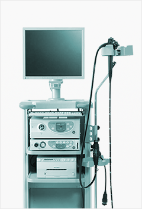
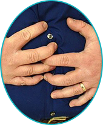

高清电子胃、肠镜
无锡锡西新城医院以先进的设备为基础，不断引进一系列高精尖端医疗设备，斥资150万购入进口高清电子胃、肠镜，并力邀无锡多家三甲医院胃肠专家到院成立“锡西消化内镜俱乐部”，全方位为锡西居民健康保驾护航。

- 设备优势
-
1.镜身任性高
2.直径小
3.镜头能多角度、多方位进行检查
4.全新、高智能电脑工作站
5.可进行随机扫描
6.便于病变的对比、查询、会诊
市三院胃肠专家林周主任领衔会诊
锡西新城胃、肠内窥镜中心引进市三院消化内镜中心领军专家林周主任为特聘专家，在林周主任与新城消化内科首席专家王会波主任的指导下筹建和管理胃、肠内窥镜中心以及业务的开展。胃、肠内窥镜中心所有医生、护士均被委派到知名三甲医院进修学习，数量掌握胃、肠镜操作技能以及胃、肠镜消毒隔离管理规范。
- 预约专家
-
林周 主任医师
(无锡市第三人民医院 每周六莅临会诊)擅长疾病：熟练掌握电子食管、胃、结肠镜检查技术及经内镜的治疗技术，擅长胃癌、肠癌的根治手术，胃肠道早期肿瘤的内镜诊断及镜下肿瘤切除手术，术中、术后胆道镜取石术，内镜下十二指肠乳头肌切开取石术（EST），内镜下经皮胃/肠造瘘术（PEG/PEJ）等高难度手术治疗。
了解更多
从事胃肠外科及消化内镜工作20余年，具有较强的临床经验，现任无锡市消化内镜专业委员会副主任委员，曾赴上海、江苏、浙江等地多家三甲医院进修学习，近年来，带领医院消化内镜团队先后顺利开展了内镜下止血术、内镜下食管狭窄扩张术、内镜下异物取出术、内镜下胃、肠息肉切除术、胶囊内镜检查技术及C13-Hp检测技术等，在国内外医学专刊发表专业医学论文数十篇。了解更多
- 成功案例
-
吴女士 58岁 阳山人
因经常胃痛且伴有嗳气、反酸、烧心、恶心、呕吐症状，在亲戚的介绍下于锡西新城医院行无痛胃镜检查诊断患有胃角深溃疡，后经锡西新城胃肠内窥镜中心王会波主任对症治疗，现已康复痊愈。
-

黄先生 65岁
六月初在锡西新城医院行无痛肠镜检查诊断患有结肠息肉，锡西新城胃肠内窥镜中心医务人员与市三院林周主任针对此案例进行了详细探讨分析，决定为患者实施内镜下结肠息肉剔除术，手术于次日成功实施，患者现已康复出院，术后恢复良好。